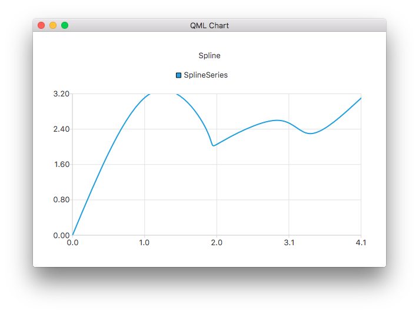

SplineSeries QML Type
Presents data as spline charts. More...
| Import Statement: | import QtCharts 2.7 |
| Instantiates: | QSplineSeries |
| Inherits: |
Properties
Detailed Description
A spline series stores the data points and the segment control points needed by QPainterPath to draw a spline. The control points are automatically calculated when the data changes. The algorithm computes the points so that the normal spline can be drawn.

The following QML code shows how to create a simple spline chart:
ChartView { title: "Spline Chart" anchors.fill: parent antialiasing: true SplineSeries { name: "Spline" XYPoint { x: 0; y: 0.0 } XYPoint { x: 1.1; y: 3.2 } XYPoint { x: 1.9; y: 2.4 } XYPoint { x: 2.1; y: 2.1 } XYPoint { x: 2.9; y: 2.6 } XYPoint { x: 3.4; y: 2.3 } XYPoint { x: 4.1; y: 3.1 } } }
Property Documentation
capStyle : Qt::PenCapStyle |
Controls the cap style of the line. Set to one of Qt.FlatCap, Qt.SquareCap or Qt.RoundCap. By default, the cap style is Qt.SquareCap.
See also Qt::PenCapStyle.
count : int |
The number of data points in the series.
style : Qt::PenStyle |
Controls the style of the line. Set to one of Qt.NoPen, Qt.SolidLine, Qt.DashLine, Qt.DotLine, Qt.DashDotLine, or Qt.DashDotDotLine. Using Qt.CustomDashLine is not supported in the QML API. By default, the style is Qt.SolidLine.
See also Qt::PenStyle.
width : real |
The width of the line. By default, the width is 2.0.